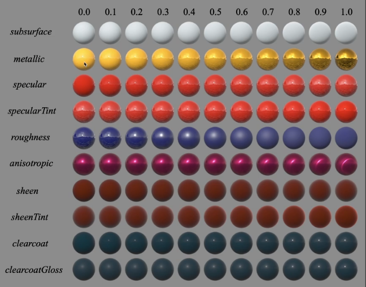

[图形]实时渲染基于物理的材质
Physically-Based Materials
一般来说，PBR指的是Physically-Based Rendering，包括描述光源如何与不同的东西、物质互动，光照，相机（比如现实的相机如何成像），就是一切与光有关。实时渲染里面说PBR一般只是说基于物理的材质
实时渲染（RTR）里，为了保证实时性，PBR材质的丰富程度远低于离线渲染。事实上很多情况下都不完全是基于物理的，为了实时性会做大量假设，例如头发。
现在基于物理的材质（在RTR中）可以分为两类
- 描述物体表面，主要是微表面模型（Microfacte BRDF）和迪士尼原则BRDF（Disney principled BRDF）
- 描述体积，比如云、烟雾、头发
RTR的材质没有新理论，但是直接拿离线的过来用开销巨大，所以有一大堆实现上的hack
Microfacet BRDF
回顾一下GAMES101讲的微表面的BRDF：

Microfacte BRDF函数表述了一个问题：给定了光的入射方向和出射方向，什么样的微表面才能把入射光反射到出射方向去（如果每个微表面都是镜面）？那就只能是法线和half vector方向一致的微表面才可以做到
Fresnel Term
入射方向有多少能量被反射取决于入射角，由Fresnel项描述。

对于绝缘体，入射光和法线夹角越大，反射越接近1，反之则接近0。

但是对于导体，反射率基本都在0.9以上
物理上的菲涅尔公式要考虑光线从介质到介质的折射率，非常复杂，实时渲染使用一种近似公式（Schlick’s approximation）
Normal Distribution Function Term
微表面模型认为，宏观上看，物体表面是平滑的，但是微观上，物体表面凹凸不平，法线各不相同，所以引入法线分布函数来描述物体表面的法线分布情况，这是最重要的一项

如果微表面法线分布比较集中，意味着法线变化不明显，整个表面比较平坦
如果微表面法线分布很分散，往四面八方都有，意味着法线很杂乱，整个表面很粗糙
为了描述法线分布，出现了各种各样不同的模型
Beckmann NDF
各向同性的版本
：表示表面粗糙程度，值越小越光滑
：半程向量和法线夹角
这个函数长得很像高斯分布（概率论里那个），实际上它也有些高斯分布的性质
这个函数定义在坡度空间（slope space）上。什么是坡度空间？

圆心是shading point，横着穿过圆心那条表示物体表面。考虑上半球法线可能的分布方向，与宏观法线夹角是，的值也很好算。如果把这张图扩展到三维空间，所在的线会变成一个平面，Beckmann就是定义在这个平面上的高斯分布函数。
但有一点点不同，概率论里的标准高斯分布，积分区域是负无穷到正无穷，无限大。
这里定义的坡度空间，虽然平面也是无穷大的，但是最终和宏观法线夹角是有限的，永远不会等于或超过90°，这样可以保证不存在朝下的微表面。
但是不能保证出射光不朝下…不好办
关于分母上那一堆东西，是为了归一化，希望在projected solid angle上积分结果为1
Trowbridge-Reitz/GGX NDF

与Beckmann快速衰减到接近0不同，GGX在接近90°时仍然有一定的能量，被称为long tail
峰值地方反映的是高光现象，随着衰减高光越来越少，Bachmann会看到高光基本没了，但是GGX的边缘会慢慢过渡，所以GGX高光边缘可以看到一种光晕的现象

GTR NDF
Brent Burley大神提出了一种扩展的GGX，拥有更长的拖尾，被称为GTR（Generalized Trowbridge-Reitz）

它带有一个参数来控制拖尾，等于2的时候是普通GGX
Geometry Term/Shadowing-Masking Term

为了解决微表面互相遮挡问题，引入几何遮蔽项
一般从上往下看遮挡部分不多，但是从掠射角（grazing angle）看遮挡严重，被遮蔽的部分应该变暗，如果没有这一项，会看到边缘非常非常亮，变成白色（话说如果没有G，分母的归一化是不是也要改…）
一种常用的G项叫做Smith，它会假设法线是某种特定的统计学分布
并且将shadowing和masking拆开（实际上这两个是有关联的），也就是：
m项是half vector

Energy Compensation Term
实时渲染基础（6）基于物理的渲染（Physically Based Rendering）
公式所有项都考虑到了，那么结果对了吗？No
图中是微表面BRDF从光滑到粗糙的渲染结果，但是为啥结果越来越暗
图片下面是人们做了个空背景，然后用uniform的环境光照来渲染的结果，这样的测试叫做white furnace test，如果BRDF不损失能量，那整个画面看上去应该看不到变暗的地方
Microfacte在粗糙情况下出了什么问题？
表面越粗糙，法线分布越广，表面沟壑会变多。当光线打到微表面时，会更容易被其他表面挡住。光线在表面多次弹射的可能性更大
解决办法的思路很简单，将丢失的能量补回去。真的在微表面考虑光线弹射的结果，运算速度会比较慢，只能用在离线渲染里
RTR怎么做？考虑一下，如果光线被遮挡，那么一定会发生下次弹射，所以遮挡等于下次弹射。根据这个事实，提出了Kulla-Conty近似，是一种经验性的模型。
Kulla-Conty
要补全丢失的能量，首先要知道丢了多少能量，也就是有多少能量能离开表面，需要计算一个公式：
公式将BRDF和cos和lighting放在一起积分。
首先认为所有入射光都是1，f是BRDF项。整个积分从0到1，再在半球上积分。结果是入射1，最后出去了多少radiance。其实就是在uniform的入射光等于1情况下解渲染方程，最后出去的值是0到1
cos项呢？我们知道球坐标系可以用和来表示，它对应的立体角是，然后公式里定义了，可以换元
损失的能量一定是，最后只要把这部分补上就行了。
为了构造额外的BRDF项，我们期望它具有如下性质：
- 使得积分出来的的结果等于
- 满足光照方向的对称性（交换和不改变BRDF的值）
Kulla-Conty公式：
如果材质还带有颜色信息呢？
其中，为平均菲涅尔项（具体推导不写了，看其他人的文章）
最后最后最后，使用能量补偿的渲染方程长这样：
和预积分时，可以对GGX重要性采样。具体采样公式推导：(GGX重要性采样)[https://www.cnblogs.com/wickedpriest/p/13788527.html]

起飞！
既然微表面BRDF看起来比较偏暗，那直接叠个diffuse不就完事了（草，不就是我吗
完全错误
Linearly Transformed Cosines(LTC)
【论文复现】Real-Time Polygonal-Light Shading with Linearly Transformed Cosines
Real-Time Polygonal-Light with LTC
LTC用于解决多边形光源情况下，microfacet的着色问题

主要思路是：
- 通过某种线性变换将BRDF变成cos函数
- 把多边形光源也一起变过去（就是图里四边形一起变过去）
- 转换后的cos函数有解析解
具体要怎么做呢
怎么去解呢？不知道，留个坑

这个方法只能用于平面多边形，凸多边形不适用
不考虑阴影
Disney’s Principled BRDF
既然已经有了符合物理的微表面模型，为什么还要研究其他非物理的材质呢？
- 微表面模型的描述能力对于现实的材质来说还是不够。比如多层材质
- 基于物理的材质对艺术家不友好
迪士尼原则BRDF并不完全基于物理

Non-Photorealistic Rendering(NPR)
（占坑）